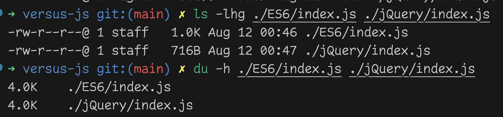

Table of Contents
Is jQuery still more productive? Or is jQuery dead? Has ES6 and modern DOM replaced it?
These are the questions that I and most of X/Twitter have been wrestling with.
Thanks to Travis Wagner’s submission we now how a clear understanding on whether jQuery has been replaced or not. The surprising answer is it depends on how you wrote your jQuery. The following two blocks of code are functionally equivalent:
let div = $("<div>")
.addClass(className)
.css("font-weight", (selected ? "bold" : "normal"))
.text("This is a test element);
parentNode.empty().append(div);
let html = `<div class="${className}" ` +
`style="font-weight: ` +
`${(selected ? "bold" : "normal")}">` +
`This is a test element</div>`;
parentNode.html(html);
The left/first implementation constructs the DOM programmatically and takes less code to write in jQuery over an equivalent implementation written in ES6 + DOM. The right/second version uses an HTML templating approach and does not benefit from using jQuery over modern ES6 + DOM. This has lead to a battle where deeply held beliefs are being defended by “Templaters” versus “Structuralists” without surfacing the underlying assumptions.
Thus the findings are:
Read on for the full story!
On August 9th, the HTMX account on X (née Twitter) did what HTMX does best: Start a controversy. This time about jQuery.
i can respect this position pic.twitter.com/jKPwhFcjBR
— htmx.org / CEO of why so serious? (same thing) (@htmx_org) August 10, 2024
This lead to numerous posts about how dead jQuery is and how it has been replaced by recent
Javascript features. Many posters referred to these features as ES6, though
document.querySelector() is the DOM enhancement most cited.
I have heard this argument before, but I’ve never understood it. While
document.querySelectorAll() can perform the same search as jQuery, it
cannot apply a change across all the elements without iterating and updating each
element individually. In my mind this provides jQuery with a critical advantage that
helps keep code sizes small. So I challenged posters to demonstrate how jQuery has
been replaced.
The results of these challenges were mostly ineffective. The answers either missed the question about updating multiple elements or they dismissed it as unimportant. The mantra was, “I can replace your jQuery with 4 lines of Javascript.”
This “4 lines of Javascript” claim seemed unlikely, but we weren’t getting anywhere with the conversation. So I tried a different tactic. I setup a GitHub repo with a minimal benchmark of code to demonstrate my understanding and give others an opportunity to prove their point. I then issued the challenge on X to those I was discussing this with.
𝗨𝘀𝗶𝗻𝗴 𝗷𝗤𝘂𝗲𝗿𝘆 𝗿𝗲𝘀𝘂𝗹𝘁𝗲𝗱 𝗶𝗻 𝟱𝟯% 𝗹𝗲𝘀𝘀 𝗝𝗮𝘃𝗮𝘀𝗰𝗿𝗶𝗽𝘁 𝗮𝗻𝗱 𝟯𝟲% 𝘀𝗺𝗮𝗹𝗹𝗲𝗿 𝗳𝗶𝗹𝗲 𝘀𝗶𝘇𝗲 𝗼𝘃𝗲𝗿 𝗘𝗦𝟲
— Jerason Banes (@ClassicGamerTWR) August 11, 2024
I did a bake-off benchmark between jQuery and raw-dogging ES6 here: https://t.co/eLNo0QjsuI
Despite the (apparently?) “common…
I want nothing more than for jQuery to be no longer necessary. Make it dead. No replacement. Just built-in browser functionality.
This point seems to confuse a lot of respondents. I’m not arguing jQuery is superior. I’m arguing that we still haven’t replaced it. Which is massively disappointing to me. When someone says, “I can replace jQuery with 4 lines of Javascript,” I want it to be true! That would be a fantastic world to live in with fewer dependencies and faster development times.
I don’t believe solutions like React, Vue, or Angular are replacements for jQuery. They are tools for SPA development. An approach which has merit, but I feel is massively overused. In my consulting work I have seen jQuery and related components be far more effective in 80-90% of the use cases than React or Angular. Nearly every decision to use the latter were decisions made in error. The applications ended up as a multipage design crammed into a monopage download. Which meant the developers were fighting the very tooling they selected to make their lives easier.
Contrast this with brand new jQuery deployments. These are typically done very quickly with few conflicts between engineers. The results tend to be very performant and successful. Even when skills are limited. (Hashtag #skillissues)
To facilitate a successful conversation I needed code that represented real-world use cases. Coming from a background in large-scale data analytics, a paginated table is a common component. The component is actually many bundled components consisting of the core table component itself with no controls other than sorting, a paginator component to control page display, and numerous components to manipulate filtering. The components can be composed in various ways to produce an interface tailored to the data set.
The components need bi-directional communication to both update the table as well as ensure that changes to the table cause components to update themselves. Distilling this down to the minimum functionality to, I came up with the following page.
This maintains the component model, the composability, and minimal bi-directional communication while simultaneously keeping the entire project at under 100 lines of Javascript. It provides a real-world analog without all the complexity of a real-world application.
I then created a “pure” ES6 version, swapping the jQuery components for Classes. Classes are the idiomatic standard for Web Components and seemed like a good analog to jQuery components, allowing for a like-to-like code comparison.
This comparison resulted in the following code sizes:
| Technology | Total LOC | Javascript LOC | File Size | Total Download Size |
| jQuery | 67 | 45 | 2,289 bytes | 72,553 bytes |
| ES6 | 115 | 94 | 3,567 bytes | 3,567 bytes |
Using jQuery resulted in 53% less Javascript and 36% smaller file size over ES6. The jQuery code achieves this through a much higher code density.
Download size is obviously a concern for any web developer. Smaller downloads can lead to faster initial page loads by optimizing network time. However, it is only one axis of analysis.
As I pointed out in the original analysis and is made clear by the table above, the smaller jQuery size only matters if an application is scaled enough to make up for the 70KB of the library. Which is perfectly doable if you cache a single copy of jQuery across pages.
But that is not the focus of my investigation.
In fact, it might surprise you to know that you’ve loaded the jQuery library at least 5 times when you loaded this page. It’s unlikely you noticed as they are all set to load after the initial page has been retrieved. Thus we can see that code size is not the only method of achieving a better experience.
Instead, the focus for me is on Productivity. i.e. How fast can a team deliver “correct” code to production.
Productivity is going to be heavily affected by quality of requirements and proper alignment of technology selection. If and only if these factors are correctly handled will the jQuery vs. ES6 question matter. So this matters to me, but not everyone will share my interest as many have more basic concerns. e.g. If you incorrectly select React despite a misalignment with that technology, no amount of code size improvement will help. Your team will be spending their time fighting their technology stack.
Assuming all other factors are equal, how do we compare productivity? The best metric we have is lines of code (LOC). As noted in Fred Brooks seminal work The Mythical Man Month, lines of code written across a given time period is a relatively fixed metric. Brooks and his colleagues observed that if the same functionality could be delivered in fewer lines of code the resulting program would be completed faster. And with higher quality since the human errors per KLOC (1000 lines of code) also stays relatively fixed.
Thus we can infer that the technology producing the fewest lines of code for the same functionality results in greater productivity.
This observation is very powerful and represents the reason why we moved from Assembly to higher level languages like C/C++, Pascal, Java, Python, etc. The reasoning may seem counter-intuitive at first, but it makes sense when you think about it.
Which is easier to reason on: CPU registers holding comparison results driving conditional jumps... or a for loop? Most would say “for loop” without batting an eye. It’s just a simpler abstraction than direct manipulation of the hardware.
With the metric established I drew the following conclusion: In this small benchmark jQuery appeared to be 30-50% more productive.
The primary issue with using LOC is that the metric is highly sensitive to code style. Most languages have an SLOC (Source Lines of Code) metric that can be used to adapt to various coding styles. For example, Java has NCSS (Non-comment Source Statements) that allows for easy comparison of LOCs. At the time of writing I am unaware of tools to obtain such a metric for Javascript.
In a best attempt to compensate for this, a standardized coding style was used. The chosen style is a pragmatic one, using Allman for general control structures/functions while still allowing practical concessions like single-line control statements. It takes advantage of intentional breaks in normalized styling to communicate information such as anonymous inner functions. This allows for strong readability and fast skimming of code but is inefficient with vertical space.
The chosen style was intentionally a real-world coding style used by millions of lines of code and numerous teams.
However, this has unintentionally caused some concerns which will need to be discussed.
Most of the submissions I received seemed to think the goal was to produce the smallest amount of code possible for the minimalist functionality shown on screen. To that end, they typically stripped away the component model and sometimes even modified functionality to make it easier to reduce code sizes. The code was small while lacking any form of reusability. It proved nothing about jQuery versus ES6 approaches.
Trying to correct this misconception was met with fierce negativity, arguing that the code not present reusability and therefore such an argument was invalid. This continues to miss the point. The code is very clearly designed for reusability. Here are three examples of the code being reused:
The first two example use the original code with zero changes other than to split the components into their own JS files. Yet we see radically different layouts and experiences due to the HTML and CSS layouts.
The third example seamlessly swaps the original pager with an alternate implementation and demonstrates how functionality remains. It even goes as far as to make one of the visible pagers a permanent fixture in a bar at the top of the window. The pager will remain visible even if the page were to scroll.
All of this is to demonstrate the original purpose: real-world analog code that can be updated to demonstrate how jQuery has been made obsolete. The expectation is that any reimplementation would focus on the replacement of jQuery. Not on trying to make as tight of code as possible. Something which is rarely the focus of shipping software.
One of the concerns raised was that this was “the most bad faith implementation ever,” with the implication that the jQuery code was intentionally written to be smaller than the ES6. The motivation for this claim was apparently the ES6 class accessors versus the jQuery approach of using if/else checks.
get currentPage()
{
return this.page;
}
set currentPage(page)
{
this.page = page;
this.render();
}
get numberOfPages()
{
return this.pages;
}
if(operation === "page" && value) this.data("page", value);
else if(operation === "page") return this.data("page");
else if(operation === "pages") return this.data("pages");
//Render
this.empty().append("<div>").text("Page " + this.data("page"));
On the surface, I can understand how this would cause concern. Especially without the coding style explicitly called out.
However, I think it’s important to understand that this is a comparison of the jQuery methods versus the ES6 methods. Both methods are (to the best of this author’s knowledge) the correct approach for the technology.
The if/else block is an idiomatic approach for handling jQuery commands to
plugins. Calling $(element).pagedContent("page") to obtain the current page
and $(element).pageContent("page", 3) functions exactly the same as
$(element).css("font-weight") and
$(element).css("font-weight", "bold"). I do not see any issues
with the correctness of this implementation. It does take advantage of single-line
if statements, but that is in many ways demonstrating an advantage of the
jQuery approach: density of logic.
Some argued that the getters/setters on the class were unnecessary resulting in code
sizes being blown out. Why couldn’t I just call object.page and
object.page = 3?
I must say that I initially thought I might have made a mistake here. I remembered that I had run into a problem, but I couldn’t immediately recall what the issue was. I revisited and remembered why this approach was used.
The problem stems from the need for a setter on page. Updating the page
is supposed to call render(). Without a setter this change will not
happen. To be symmetrical I need both a getter and a setter on page.
With a getter/setter for page, it seemed to make sense to provide a
getter for pages so that the API remains consistent. I honestly
believe that this is the “correct” way to handle this and is how it would be
implemented in real-world software.
However, I made an attempt at
rework to
eliminate the getters/setters. This version exposes a single method to update the current
page with the page and pages properties acting as read-only values.
There is no enforcement of this making it a somewhat more dangerous approach. But it does
drop the code size of the ES6 version from 94 to 83 lines. Still 46% more code than the
jQuery version, but better. Not a major win though.
The next most persuasive argument is the number of empty lines in the render function of
PagedContent:
render()
{
let page = this.page;
this.elements.forEach(function(element, index) {
let info = document.createElement("div");
info.textContent = "Page " + page;
element.replaceChildren(info);
});
}
This is quite a bit larger than the jQuery version which ended up so small it fit on a single line (Line 27):
if(operation === "page" && value) this.data("page", value);
else if(operation === "page") return this.data("page");
else if(operation === "pages") return this.data("pages");
//Render
this.empty().append("<div>").text("Page " + this.data("page"));
There was no intent to defraud here. The task was so simple in jQuery that it fit within a single 80-character line. You can see that in comparison to the if statements above it is nearly the same size. Though it turns out there is a bug in line 27 that did not affect functionality. The corrected code adds 3 characters and is still within 80 characters in total.
//Render
this.empty().append($("<div>").text("Page " + this.data("page")));
Arguably, my unnecessary // Render comment handed the ES6 version an extra line to
work with. And this isn’t the only time the ES6 version is getting a bone thrown.
If we look at the rendering for the pager, we can see line-wrapping on the jQuery call starting at line 39:
function createPage(page, selected)
{
return $("<span>")
.addClass("page" + (selected ? " selected" : ""))
.text(page)
.click(function() {
content.pagedContent("page", page);
that.pager(content);
});
}
this.empty().append($("<span>").text("Page: "));
for(let i=0; i<pages; i++)
{
this.append(createPage(i+1, (page === i+1)));
}
We can see a similar statement in single-line form on line 48. The otherwise single-line <span>
creation on line 39 is wrapped to at least 3 lines more than necessary. And no
attempt was made to condense lines 50-53 into a single-line for loop.
The real reason why the ES6 is so much larger is because the current DOM APIs lack
the ability to chain operations like jQuery. This results in separate statements
for creating an element, setting the text content, and then replacing the contents of
the parent element. Without the relatively new element.replaceChildren()
even more code would have been required to empty the parent element.
Which gets to the core of my argument. The jQuery code is naturally more dense. Not due to coding style or explicit decisions made to write tighter code. But due to a couple of inherent features in jQuery:
Just to punctuate this point, an attempt was made to minimize the code to demonstrate the “bad faith” supposedly on display. Instead of demonstrating bad faith it showed that the Javascript was still ~30% smaller after minification:

Hopefully I have demonstrated that this was a fair comparison by all measures and that every decision was made in good faith. I don’t mean that my point was inherently proven. Only that the setup was fair for discussion. Given the reputational damage associated with a “bad faith” accusation, I politely request a retraction by those who made or explicitly amplified this accusation. It’s not required, but it would be appreciated.
With that out of the way let’s talk about how Travis Wagner proved that jQuery is dead... and simultaneously shows that the original findings were correct.
As mentioned in the Overview, most of the submissions reached a smaller size by deleting the component model and otherwise focusing on “cleverness” to produce less code.
This was not intended as a coding competition. The goal was to show a minimum example of code that represented a real-world use case to see if the advantages of jQuery could be replicated or replaced.
None of the submissions achieved this until I received a submission by Travis Wagner. Arguably, Travis’ submission didn’t truly prove that jQuery is dead. Rather, it brought into sharp relief that there are two sides to the argument. And both happen to be correct.
Travis Wagner’s submission was impactful because it clearly showed the other side of the argument and why we appear to be disagreeing in the first place. It turns out that there are two radically different ways of writing jQuery. You will land in one camp or the other depending on your preferred approach. This difference in approach becomes the basis for disagreement.
Let’s start at code size. Travis’ implementation comes in at only 30 lines of Javascript. A clear win against the 45 lines of jQuery, right? Not so fast.
In an effort to clear perceived issues with the original coding style, Travis used a K&R-based style with no vertical space except for separation of functions. While this doesn’t quite match a real-world style (vertical spacing around control structures is very common), it’s fully within the bounds of the conversation. I had repeatedly stated that any style is fine as long as both versions use the same style for comparison.
Reformatting the jQuery version in a best effort to match Travis’ ES6 version gives us… 33 lines of code. A clear win for Travis’ version by 3 lines of code.
| Technology | Total LOC | Javascript LOC | File Size | Total Download Size |
| jQuery | 55 | 33 | 2,214 bytes | 72,478 bytes |
| ES6 | 51 | 30 | 1,941 bytes | 1,941 bytes |
Note that I had no examples of single-line if statements to reference in Travis’ code so I left the original single-line format in the jQuery code. However, I also left wrapping on the chained jQuery statements. Something I suspect would have been flattened into single-line. Either way it doesn’t matter. These two are close enough. There is no statistically-significant difference in size.
While I’m unsure if it was intentional or not, Travis’ version introduced configurable
values for the page and pages settings in the pagedContent
component. This was accomplished by adding the data-page and
data-pages attributes on the HTML tag and then updating data-page
as the page is updated by the pager.
<body>
<div id="top_pager" class="pager"></div>
<div id="content" class="paged-content" data-page="1" data-pages="5"></div>
<div id="bottom_pager" class="pager"></div>
</body>
While the number of pages would be computed in the real world by the data passed
into the component (thus the use of a hard coded value as a stand-in) there’s
nothing wrong with this implementation as a configurable value. The initial state
of data-page also allows a default page other than 1 to be used. Which could be
useful for remembering state between page transitions.
To ensure that both implementations match as closely as possible, I implemented this default values feature in the jQuery version. It ended up not affecting the analysis as I was able to implement the feature without additional lines of code.
if($.isEmptyObject(this.data())) {
this.data("page", (operation && operation.page) || 1);
this.data("pages", (operation && operation.pages) || 5);
}
$(document).ready(function() {
$(".pager").pager($("#content").pagedContent({page: 1, pages: 5}));
});
Travis’ submission had one major bug and one minor design issue that I strongly feel should be fixed. Here is Travis’ original submission. Click the “Page:” text to the left of the numbers to see what happens:
The “Page NaN” result is due to two factors. The first is that everything in the pager bar is a click target. (Lines 36 & 37) This means if you click on “Page:” or an empty space outside the numbers you’ll activate the click handler.
The second and more minor issue is that the code is parsing the page value from the text content. (Line 38) This is using the rendered text as state data, limiting the ability of the code to detect valid clicks.
paginationEl.addEventListener("click", (e) => {
const curr = Number(e.target.textContent);
pagedContentEl.innerHTML = renderPagedContent(curr);
pagedContentEl.dataset.page = String(curr);
pagers.forEach((el) => (el.innerHTML = renderPagination(curr, Number(pagedContentEl.dataset.pages))));
});
After reporting these to Travis, I did a quick bug fix on these two issues to resolve the problem. (Lines 25 & 38) I was able to fix without changing the number of lines of code.
function renderPagination(curr, total) {
let text = "Page: ";
for (let i = 1; i <= total; i++) {
text += `<span data-page="${i}" class="page${i === curr ? " selected" : ""}">${i}</span> `;
}
return text;
}
paginationEl.addEventListener("click", (e) => {
const curr = Number(e.target.dataset.page) || Number(pagedContentEl.dataset.page);
pagedContentEl.innerHTML = renderPagedContent(curr);
pagedContentEl.dataset.page = String(curr);
pagers.forEach((el) => (el.innerHTML = renderPagination(curr, Number(pagedContentEl.dataset.pages))));
});
The fix works by moving the state of the page number to an attribute on the <span>
tag, and then detecting if the attribute exists. In the case of a missing attribute
it falls back to the currently rendered page number.
This method is very similar to the method used to capture the pagedContent state, thus making the code more consistent.
Travis’ implementation has a weak component model implemented by related functions.
The renderPagedContent() / createPagedContent() and
renderPagination() / createPagination() functions can
be grouped together into JS files to represent each component’s interface. The
use of the top-level namespace for functions is less than ideal, but it works.
However, the specific implementation submitted does have a few problems with maintaining this model.
The most egregious is the direct update of the pagedContent element in the middle
of the createPagination() function. (Line 39)
function createPagination(paginationEl, pagedContentEl, pagers) {
paginationEl.innerHTML = renderPagination(Number(pagedContentEl.dataset.page), Number(pagedContentEl.dataset.pages));
paginationEl.addEventListener("click", (e) => {
const curr = Number(e.target.textContent);
pagedContentEl.innerHTML = renderPagedContent(curr);
pagedContentEl.dataset.page = String(curr);
pagers.forEach((el) => (el.innerHTML = renderPagination(curr, Number(pagedContentEl.dataset.pages))));
});
}
This could have been mitigated by moving line 40 above line 39 and replacing line 39
with a call to createPagedContent(). This would have used the
exposed component function, deduplicating functionality and creating better
separation of concerns.
This still leaves an issue of a secondary channel of communication through the
data-page and data-pages attributes. There are a few ways
to mitigate this, but it isn’t required if the attribute approach for
communication is clearly documented for the components. It’s not fundamentally
different than using class attributes. Just a weaker association between the
function calls and the data objects. i.e. It is less “encapsulated” into a
single concept.
The most eye opening discovery from Travis’ submission is that I simply was not looking at the problem from his perspective. Just as, I assume, he wasn’t looking at it from mine.
To be clear, I would never implement a webapp this way. Many of the techniques used in this code were explicitly banned on my teams. This was due to the perceived risks carried by these techniques.
The most fundamental problem I have is the extensive use of innerHTML for
rendering. This requires constant validation of types and content to prevent
injection attacks from occurring. One little slip up and you could be exposing
your users to Javascript injection attacks.
We can see there are Number() and String() casts littered
everywhere in an attempt to ensure the correct type:
function createPagination(paginationEl, pagedContentEl, pagers) {
paginationEl.innerHTML = renderPagination(Number(pagedContentEl.dataset.page), Number(pagedContentEl.dataset.pages));
paginationEl.addEventListener("click", (e) => {
const curr = Number(e.target.textContent);
pagedContentEl.innerHTML = renderPagedContent(curr);
pagedContentEl.dataset.page = String(curr);
pagers.forEach((el) => (el.innerHTML = renderPagination(curr, Number(pagedContentEl.dataset.pages))));
});
}
In fairness, these casts are also functional in many cases. The casts ensure the proper type is set so that math or string concatenation doesn’t go sideways.
Which points to my secondary concern. This code leaks state all over the place.
On line 38 we see the current page number being parsed from the content of the
<span> tag. Which means that the display content is now data.
This works as long as our rendering and our data match. Any update that changes the format of the page numbers would immediately fail and need to be redesigned. e.g. prefixing the word “Page” to the number, using graphics, glyphs from an icon library, etc.
As I previously demonstrated the state could be improved by setting a tag attribute in the same manner pagedContent does. Using closure to trap the value would be even better, but the template-based rendering precludes that as an option.
function renderPagination(curr, total) {
let text = "Page: ";
for (let i = 1; i <= total; i++) {
text += `<span class="page${i === curr ? " selected" : ""}">${i}</span> `;
}
return text;
}
function createPage(page, selected)
{
return $("<span>")
.addClass("page" + (selected ? " selected" : ""))
.text(page)
.click(function() {
content.pagedContent("page", page);
that.pager(content);
});
}
To be fair, it is not always possible to use a closure technique. Drop-downs
are a good example where some form of identifier for the value has to be
carried in the options array. Either the selectedIndex is used
directly or a value is stored in the <option>.
To reiterate, this is my subjective opinion and the way I prefer to design applications. This is not a reflection on the quality of the work or anyone who writes Javascript this way. The only reason we are discussing my opinion is that it gets to the heart of why we are disagreeing on whether jQuery is replaced.
Now that the dust has settled we can see that there are two clear approaches to writing jQuery:
.html() function of jQuery. Templating provides high
code density and clear visual explanation of what HTML is going to be modified and
how. The tradeoff is inherent code safety.What I find interesting about this split is that it is only a split in thinking. Not a true split in actual practice. Most code bases I’ve seen in the wild will combine these methods as appropriate.
Those who fall into the “Templater” camp will often find that complex, configuration-driven rendering is easier to accomplish with structural changes responding to the configuration rather than trying to if/else their HTML templates. It's also higher performance for when that matters.
Those who fall into the “Structuralist” camp may find the occasional small HTML injection safe enough and may even rely on server-side templates (e.g. JSP, ASP, PHP, etc.) for initial-state rendering. Server side templating carries all the same risks as client-side templating.
With this in mind we can now answer the original question.
If your thinking aligns to Structuralist thinking, jQuery has yet to be replaced by current DOM technology. You will be writing more code overall, but it appears you can obtain ~30% productivity improvement by using jQuery. Additionally, I find the component libraries remain quite compelling.
If your thinking aligns to Templater thinking, then jQuery is a dead technology to you. You will find everything you need in the current ES6 + DOM APIs. Some jQuery components may remain appealing. But I expect you’re looking towards Web Components and other non-jQuery approaches for component solutions. You may already have embraced a component library solution like React. Even if it drives a Single Page Application (SPA) approach in the bargain.
This entire process was quite interesting and informative. While it was my goal to engage in intelligent discourse, the conversation branched a number of directions. Many of which feel like cause for concern.
First I want to say that truly curious and engaged engineers are still around. Taking a look at the PRs, Forks, and Issues of the project shows all kinds of creative implementations. From Web Components to Umbrella JS to React, and many more! While they don’t necessarily answer the question of if jQuery is dead (many are even larger than the original ES6 implementation!) they generate interesting conversations of their own.
And I am totally here for it. These are my kinds of people. 😎
Of greater concern was the sheer number of Ad Hominem attacks I experienced. I received claims of never having written serious code in my life, completely not knowing what I am doing because I’m not automatically embracing the latest framework, and my favorite: Being just plain “retarded” for bringing it up in the first place.
Looking back at these posts I’ve made some intriguing discoveries:
One could argue that this is my own fault for starting a serious technical conversation on X. Which is fair. But also raises the question: Where can we have this conversation?
Once upon a time we had web forums that facilitated discussions. Moderators would step in to discourage contentless posts that merely sought to attack or disparage. This encouraged well-thought out posts leading to more engaging conversations.
I was an early member of many of these back in the day. JavaLobby, OSDev, JavaGaming.org, and AtariAge all come to mind as past examples of such forums.
Today’s social media apps like X, Reddit, and Discord may have less “gatekeeping”, but I’m not sure we are better for it. Sometimes the younger generation needs to lurk and learn from the conversations of those more senior to them.
Additionally there’s the problem of interpreting tone. Conciliatory and respectful are difficult tones to convey in the written word. I expect many read my words in a more hostile tone than intended. Just as I likely read their statements with more hostility than they intended.
Unfortunately, I don’t know how to solve this. All I can do is to remind myself and others that we’re all on the same side. We want to create better software while lowering the cost of creating that software. Can we work to facilitate those conversations rather than attack one another?
In the end I think I learned a lot about the discourse around jQuery as well as its position in the market. We’re all arguing past each other because we’re not understanding each other’s positions.
I want to thank Travis Wagner for sticking with the discussion / argument and getting us to clarity. And thanks to everyone else who participated in the discussion! I really do appreciate the time and I hope everyone else learned as much from this as I did.
Whether you are a Structuralist or a Templater, I think we have a lot to share if we can understand each other’s viewpoints. For my part I will keep using jQuery where it makes sense. And I expect others will continue to ignore it as “dead tech”. And that’s okay.
I expect the next major shift is not too far around the corner. Maybe it will be Web Components. Maybe it will be something else. Just please take the time to evaluate the technology and make sure you’re using it for the right reasons. Software Engineering was never meant to be a popularity contest.